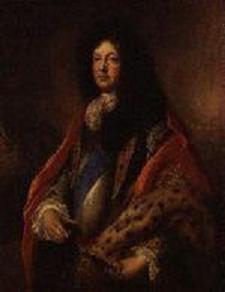

Lillibulero
The Glorious Revolution - 1688
Text ascribed to Lord Wharton and Lord Dorset
First printed in 1689 in "The Muses' Farewell to Poetry and Slavery"
Tune
Sequenced by Ch.Souchon

Richard Talbot, Duke of Tyrconnell
{kind=link}

|
LILLIBULERO
1. Ho! brother Teague, dost hear the decree?
|
LILLIBULERO
1. Ho! frère Teague, c'est décidé:
|
|
"Lillibulero" was a
Whig tune and the British
army's song
during the uprising of 1688 in which
James II was defeated by William of Orange.
It was a rallying call for the Protestants and has
been called "the tune that drove James out of three
countries."
The tune was ascribed to Henry Purcell but there is no evidence for this. Purcell did only arrange a folk tune for printing in 1686. Likewise, the ascribed authors of the lyrics are not likely to have written them. The Irish Jacobite Richard Talbot, Duke of Tyrconnell , was King Jame's agent in Ireland who endeavoured to involve the French in the war against Britain. (Besides, a "talbot" is a "hunting dog" ) "Teague" (Gael. first name "Tadgh") is an abusive term for "Irish Catholic". The song makes fun of the widespread Irish belief in prophecies (see "When the King" ). A common theme of such prophecies was the foreigners would be driven out of Ireland in some decisive battle. Likewise, the morale of the Jacobite troops at Limerick was high in spite of the previous defeat at the Boyne, due to an ancient Irish prophecy that the Irish would win a great victory over the English outside Limerick. And the battle of Prestonpans was named after the plain Gladsmuir located over a mile away on account of a similar prophecy. Similar songs were published in 1640 and 1686.
The
mysterious refrain
(burden) "lero, lero etc..." could be
a corruption of a Gaelic phrase
"An lile ba léir é; ba linn an là" which may translate in three different ways:
|
"Lillibulero" fut le chant préféré des
Whigs et de
l'armée anglaise
pendant le soulèvement de 1688 qui vit
Jacques II être supplanté par Guillaume d'Orange.
C'était le chant de ralliement des Protestants et l'on a
pu dire que c'était "l'air qui avait fait perdre au roi
Jacques ses trois royaumes."
Cette mélodie a été attribuée à Henri Purcell mais on n'en a aucune preuve. Purcell a effectivement écrit un arrangement sur un chant populaire qui fut imprimé en 1686. De même, les auteurs putatifs du texte ne sont sans doute pas ceux qui l'ont écrit. Le Jacobite Irlandais Richard Talbot, Duc de Tyrconnell , est l'agent du Roi Jacques en Irlande qui s'efforça de faire entrer la France en guerre contre la Grande Bretagne. Par ailleurs, un "talbot" était un chien de chasse . "Teague" (prénom gaél. "Tadgh") est une injure signifiant "Catholique irlandais". Le chant ironise sur le goût naïf des Irlandais pour les prophéties (cf "Si le Roi" ). Un thème fréquent de ces prophéties était l'annonce d'une grande bataille qui contraindrait les étrangers à quitter l'Irlande. De même le moral des troupes Jacobites à Limerick était resté intact malgré la défaite de la Boyne, en raison d'une prophétie annonçant leur victoire sur les Anglais à cet endroit. Et la bataille de Prestonpans fut appelée bataille de Gladsmuir , plaine située à plus de 3 km, pour des raisons similaires. Des chansons semblables à celle-ci furent publiées en 1640 et 1686.
Le
mystérieux refrain
"lero, lero etc..."
peut être une corruption du
Gaélique "An lile ba léir é; ba linn an là" qu'on peut
traduire de 3 façons:
Le texte est écrit dans un mauvais anglais imputé aux celtophones (ici dans une intention satirique), comme dans:
|
Background music: "La Marche du Prince d'Orange (Jean Baptiste Lully & Jacques Danican Philidor)